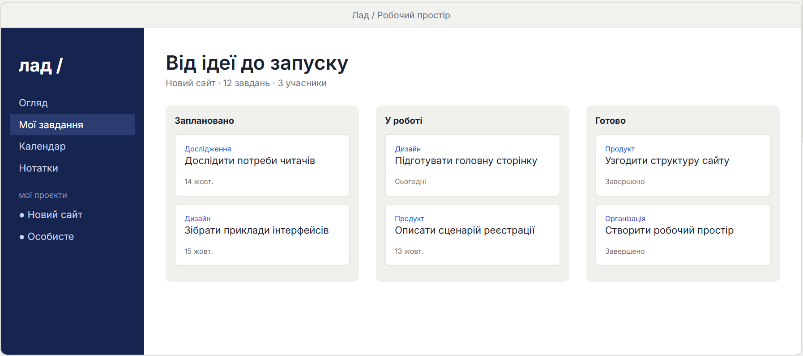

01 / Про продукт
Усі справи — в ладі.
Увага — на головному.
Лад поєднує завдання, календар і нотатки в одному легкому застосунку для комп’ютера. Плануйте день, ведіть проєкти й зберігайте ідеї — без зайвих вкладок і складних налаштувань.

Зрозумілий план
Дошки, пріоритети й терміни допомагають перетворити великий проєкт на конкретні кроки.
Ідеї поруч зі справами
Пов’язуйте нотатки із завданнями, щоб контекст не губився між різними застосунками.
Ваші дані — у вас
Працюйте без інтернету. Дані зберігаються локально, а резервні копії контролюєте ви.